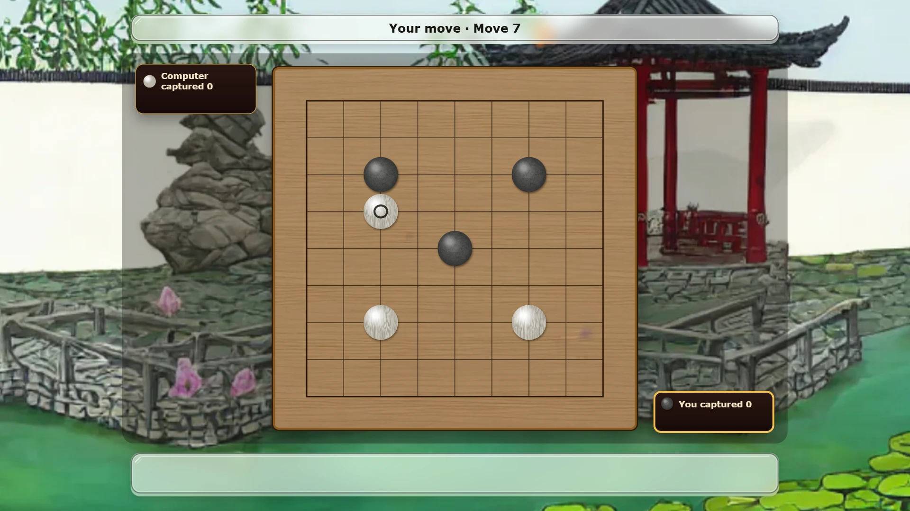
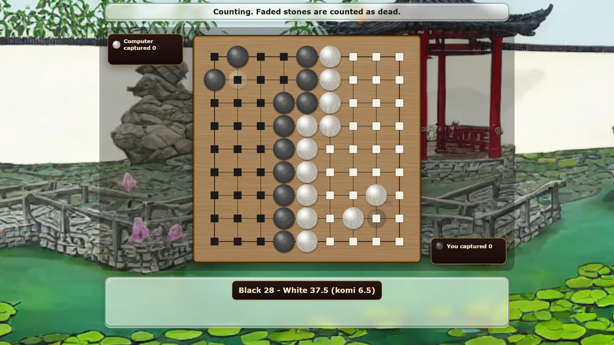

Weiqiwise — play Go online free
Go is a board game for two players, Black and White, who take turns placing stones on a grid. A stone never moves once it is placed, but a group of stones can be captured by surrounding it. The aim is to end the game with more of the board walled off than your opponent. Go came from China more than 2,500 years ago, where it is called weiqi; Japan calls it igo and Korea calls it baduk. Weiqiwise plays it in the browser, against the computer or a friend.

The board and the stones
The board is a grid of lines, and stones go on the points where two lines cross, not inside the squares. The full board is 19 by 19, so it has 361 points. Weiqiwise also offers 13 by 13 and 9 by 9. A game on 9 by 9 takes a few minutes, which makes it the usual board for a first game.
Black places the first stone, then the players take turns. You may also pass instead of placing a stone. Each stone you capture goes into your bowl, and the bowl in the corner of the screen shows how many you hold.
The move guide helps while you learn. It puts a red ring round any group that is one move from capture, and it marks with a small cross every point where the rules do not let you play.
Liberties and capture
The empty points next to a stone, along the lines, are its liberties. In the middle of the board a stone has four, on an edge three and in a corner two. Stones of one colour that touch along a line form a group, and the group shares all of its liberties.
When your move fills the last liberty of an enemy group, that group is captured and comes off the board. For example, a white stone on an edge with black stones on its left and right has one liberty left. If Black plays on that last point, the white stone is lifted off and Black keeps it. A group with one liberty left is in atari, and Weiqiwise shows an "Atari!" banner when that happens.
The two moves you may not play
The first is suicide. You may not place a stone where it would have no liberties, unless that move captures enemy stones and so opens liberties for it.
The second is ko. Sometimes one capture can be answered at once by a capture of the same stone, and the two players could repeat that exchange forever. The ko rule stops it: you may not make a move that brings back a position the board has already had. After your opponent takes a ko, you play somewhere else first, and only then can you take it back.
How a game ends
When both players pass in a row, play stops. Stones that could not survive if play went on are counted as dead. Weiqiwise marks the dead stones and fades them, and both players accept the count. If you disagree with it, choose Keep playing and the game goes on. You can also resign at any time.
White gets extra points called komi, because Black had the first move. Weiqiwise offers the Japanese count and the Chinese count, the two most players use, and the table shows how each one scores:
| Count | What scores | Komi for White |
|---|---|---|
| Japanese | empty points you surround, plus the stones you captured | 6.5 |
| Chinese | empty points you surround, plus your stones on the board | 7.5 |
Both counts give the same winner in almost every game. The half point in komi means a game cannot end in a draw.
Two ways to play on Weiqiwise
You can play against the computer at one of three levels, or against a friend online in a room. For the computer, pick Easy, Medium or Hard, choose Black or White, and choose the board size. Easy is the place to learn how captures work, and Hard is a fair test on 9 by 9.
For a friend, open a room and send the share link or the six-letter code. Your friend joins from their own browser, and the game keeps both boards in step.
On a phone, the points of a 19 by 19 board are small. The first tap shows a pale stone where yours would go, and tapping that point once more puts it down, so a slip of the finger does not cost you the game.
Tips for a first game
Start on 9 by 9 against Easy, and turn the move guide on. Take the corners first, then the edges, then the centre, because a corner needs the fewest stones to wall off. Keep your stones connected where you can, since one large group is harder to capture than two small ones. When a group of yours has a red ring, add a liberty or connect it before you do anything else.
The last idea is the one that makes Go deep. A group with two separate empty points inside it, called eyes, can never be captured, because your opponent cannot fill both at once and a stone placed in either one has no liberties. Build two eyes and your group lives for the rest of the game.
More board games
For five in a row on a Go-style grid, try Gomowise (Gomoku). For the Chinese and Japanese chess games, try Xiangqiwise and Shogiwise.
More like this: 2-player games online · Multiplayer browser games · Board games with friends